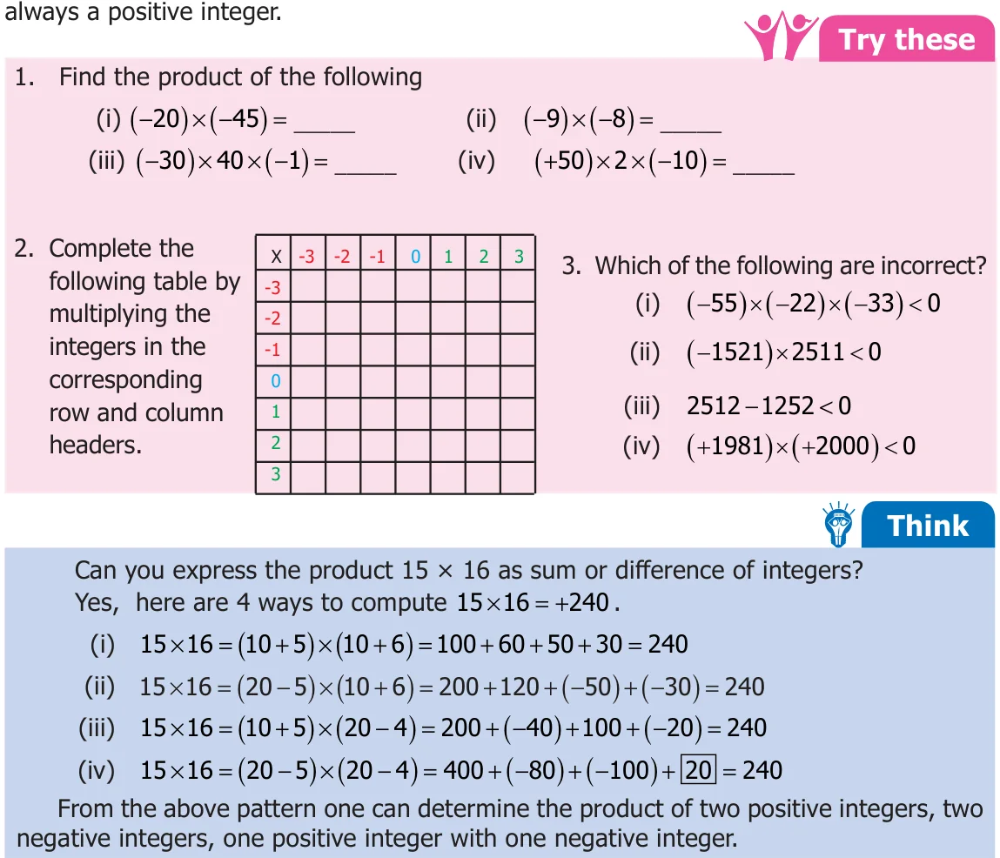

SituationSituation 1
Ramani and Ravi are playing with pebbles in a heap. Ramani is adding some pebbles to the heap while Ravi removes some pebbles. First, Ramani adds 3 pebbles. Then she adds 3 more pebbles. She repeats this 2 more times. Can you say how many pebbles she added in all? Since adding pebbles is positive we can write \((+3)+(+3)+(+3)+(+3) = +12\) or
\(4 \times (+3) =12\)
The total number of pebbles added is 12.
Ravi takes out 5 pebbles three times. If we represent “taking out” as a negative integer then ( \(- 5)+( - 5)+( - 5) = - 15\) or we can simply put it as ( \(- 5) \times 3 = - 15\) . Ravi has removed 15 pebbles from the heap. This illustrates that multiplication of negative integers is also repeated addition just like positive integers or whole numbers. We can draw a number line and visualise the above multiplication of integers as repeated addition. \(4 \times 3 =12 (3\) is added four times).
\(- 6 - 5 - 4 - 3 - 2 - 1 0 1 2 3 4 5 6 7 8 9 10 11 12 13 14 15\)
( - ) \(\times = - 15\) (( \(- 5)\) is added three times).
\(- 16 - 15 - 14 - 13 - 12 - 11 - 10 - 9 - 8 - 7 - 6 - 5 - 4 - 3 - 2 - 1\)
Fig. 1.19
We have no difficulty to understand that a positive integer like (+7) multiplied by another positive integer like (+8) is positive (+56). Also, a positive integer like +7 multiplied by a negative integer like \(- 5\) is \(- 35\) and \(+5 \times - = - 7 35\). But what about a negative integer
( \(- 3)\) multiplied with another negative integer \(- 5\)? To understand this, let us observe the following pattern.
( \(- 5) \times 3 = - 15\) ( \(- 5) \times 2 = - 10\) ( \(- 5) \times 1 = - 5\) ( \(- 5) \times 0 = 0\) ( \(- 5) \times\) ( \(- 1)= +5\) ( \(- 5) \times\) ( \(- 2) = +10\) ( \(- 5) \times\) ( \(- 3) =+15\)
Note that how in each step the number increases by 5 from \(- 15\) to \(- 10\) , from \(- 10\) to \(- 5\), from \(- 5\) to 0. Therefore, the next number in the pattern will be +5 only and not \(- 5\). Similarly ( - ) \(\times\) ( \(- 2)\) is a positive integer 10. So, the product of two negative integers is

Example 1.17 Find the value of :
- (i)( \(- 35) \times\) ( \(- 11)\) (ii) \(96 \times\) ( \(- 20)\) (iii) ( \(- 5) \times 12\)
- (iv)\(15 \times 5\) (v) 999 x 0
Solution
- (i)( \(- 35) \times\) ( \(- 11) = 385\) (ii) \(96 \times\) ( \(- 20) = - 1920\)
- (iii)( \(- 5) \times 12 = - 60\) (iv) \(15 \times 5 = 75\)
- (v)\(999 x 0 = 0\)
Example 1.18 A fruit seller sold 5kg of mangoes at a profit of ₹ 15 per kg and 3kg of apples at a loss of ₹ 30 per kg. Find whether it is a profit or loss.
Solution
Profit of 1kg mangoes = ₹ 15 Profit of 5kg mangoes \(= 15 \times 5\)
= ₹ 75
Loss of 1kg apples = ₹ 30 Loss of 3kg apples \(= 30 \times 3\)
= ₹ 90 Loss \(= 90 - 75 =\) ₹ 15
Example 1.19 Browsing rates in an internet centre is ₹ 15 per hour. Nila works on the internet for 2 hours in a day for 5 days in a week. How much does she pay?
Solution
Number of hours spent on an internet for a day \(= 2\) hrs Therefore, number of hours spent on the internet for 5 days \(= 5 \times 2\)
\(= 10\) hrs
Cost of browsing per hour = ₹ 15 Cost of browsing for 10 hours \(= 15 \times 10\) Therefore, the amount paid by Nila for 5 days = ₹ 150
1.4.1 Properties of Multiplication of Integers
Recall that multiplication of whole numbers had the closure property. If we test this property for integers we find ( \(- 7) \times\) ( \(- 2) = +14\) , ( - ) \(\times = -\) , \(4 \times\) ( \(- 9) = - 36\) . Thus, product of any two integers is always an integer. "Closure property" holds for integers.
Therefore, for any two integers a, b ; \(a \times b\) is also an integer.
Consider the examples, \(21 \times\) ( \(- 5) = - 105\) is the same as ( \(- 5) \times 21 = - 105\) . The product ( \(- 9) \times\) ( \(- 8) = +72\), ( \(- 8) \times\) ( \(- 9) = 72\) . In both the cases the product is the same integer. So, changing the order of multiplication does not change the value of the product. Hence, we conclude that multiplication of integers are "commutative".
Therefore, for any two integers a, b ; \(a \times b = b \times a\).
To verify that multiplication of integers is associative, let us check whether ( \(- 5) \times\) ( \(- 9) \times\) ( - 12) and ( \(- 5) \times\) ( - 9) \(\times\) ( \(- 12)\) are equal.
( \(- 5) \times\) ( \(- 9) \times\) ( - 12)= ( \(- 540)\) and ( \(- 5) \times\) ( - 9) \(\times\) ( \(- 12) =\) ( \(- 540)\).
Hence, "associative" property is true for mutliplication of integers.
Therefore, for any three integers a, b, c ; (a \(\times\) b) \(\times c = a \times\) (b \(\times\) c).
Just as zero added to a integer leaves it unchanged, integer 1 multiplied with any integer leaves the integer unaltered. For example, \(57 \times 1 = 57\) , and \(1 \times\) ( \(- 62)= - 62\) . We say that the integer 1 is the identity for multiplication of integers or "multiplicative identity".
Therefore, for any integer a; \(a \times 1 = 1 \times a = a\).
Try these
- 1.Find the product and check for equality :
- (i)\(18 \times\) ( \(- 5)\) and ( \(- 5) \times 18\)
- (ii)\(31 \times\) ( \(- 6)\) and ( \(- 6) \times 31\)
- (iii)\(4 \times 51\) and \(51 \times 4\)
- 2.Prove the following :
- (i)( \(- 20) \times (13 \times 4) =\) ( \(- 20) \times\) 13 \(\times 4\)
- (ii)( \(- 50) \times\) ( - 2) \(\times\) ( \(- 3)=\) ( \(- 50) \times\) ( \(- 2) \times\) ( - 3)
- (iii)( \(- 4) \times\) ( - 3) \(\times\) ( \(- 5)=\) ( \(- 4) \times\) ( \(- 3) \times\) ( - 5)
Note
Consider an example, ( \(- 7) \times\) ( \(- 6) \times\) ( \(- 5) \times\) ( \(- 4)\). Let us try to do the above multiplication of integer,
( \(- 7) \times\) ( \(- 6) \times\) ( \(- 5) \times\) ( \(- 4) =\) [( \(- 7) \times\) ( \(- 6)] \times\) [( \(- 5) \times\) ( \(- 4)]\)
\(= (+42) \times (+20) = + 840\)
From the above example, we see that the product of four negative integers is positive. What will happen if we multiply odd number of negative integers. Let us consider another example, ( \(- 7) \times\) ( \(- 3) \times\) ( \(- 2)\). Multiplying the above integers, we get
( \(- 7) \times\) ( \(- 3) \times\) ( \(- 2) =\) [( \(- 7) \times\) ( \(- 3)] \times\) ( \(- 2)\)
\(= (+21) \times\) ( \(- 2) = - 42\)
From the above example, we see that the product of three negative integers is negative. In general, if the negative integers are multiplied even number of times, the product is a positive integer, whereas negative integers are multiplied odd number of times, the product is a negative integer.
1.4.2 Distributive Property of Multiplication over Addition
We have already studied that multiplication distributes over addition on whole numbers. Let us check the property for integers. Take for example ( \(- 2) \times (4 +5)=\) ( \(- 2) \times\) 4+ ( \(- 2) \times\) 5 \(LHS =\) ( \(- 2) \times (4 +5) RHS =\) ( \(- 2) \times\) 4+ ( \(- 2) \times\) 5
= ( \(- 2) \times 9 =\) ( \(- 8)+( - 10) =\) ( \(- 18) = - - 8 10 = - 18 = - 18\)
From the above, we can observe that ( \(- 2) \times (4 +5)=\) ( \(- 2) \times\) 4+ ( \(- 2) \times\) 5 Hence, "distributive property of multiplication over addition" is true for integers.
Therefore, for any three integers a, b, c ; \(a \times (b+c) =\) (a \(\times\) b) + (a \(\times\) c)
Try these
- 1.Find the values of the following and check for equality:
- (i)( \(- 6) \times (4+( - 5))\) and (( \(- 6) \times 4) +\) (( \(- 6) \times\) ( \(- 5))\)
- (ii)( \(- 3) \times [2+( - 8)]\) and [( \(- 3) \times 2]+[( - 3) \times 8]\)
- 2.Prove the following:
- (i)( \(- 5) \times\) [( \(- 76)+8] =\) [( \(- 5) \times\) ( \(- 76)] +\) [( \(- 5) \times 8]\)
- (ii)\(42 \times [7+( - 3)] = (42 \times 7) + [42 \times\) ( \(- 3)]\)
- (iii)( \(- 3) \times\) [( \(- 4)+( - 5)] =\) (( \(- 3) \times\) ( \(- 4)) +\) [( \(- 3) \times\) ( \(- 5)]\)
- (iv)\(103 \times 25 = (100+3) \times 25 = (100 \times 25) +(3 \times 25)\)
Example 1.20
Prove that ( \(- 7) \times (+8)\) is an integer and mention the property.
Solution
( \(- 7) \times (+8) =\) ( \(- 56)\)
Hence, \(- 56\) is an integer. Therefore, ( \(- 7) \times (+8)\) is closed under multiplicaton.
Example 1.21
Are ( \(- 42) \times\) ( \(- 7)\) and ( \(- 7) \times\) ( \(- 42)\) equal? Mention the property.
Solution
Consider, ( \(- 42) \times\) ( \(- 7)\),
( \(- 42) \times\) ( \(- 7) = +294\)
Consider, ( \(- 7) \times\) ( \(- 42)\),
( \(- 7) \times\) ( \(- 42) = +294\)
Therefore, ( \(- 42) \times\) ( \(- 7)\) and ( \(- 7) \times\) ( \(- 42)\) are equal. It is commutative under multiplication.
Example 1.22
Prove that [( \(- 2) \times 3] \times\) ( \(- 4) =\) ( \(- 2) \times [3 \times\) ( \(- 4)]\).
Solution
In the first case ( \(- 2)\) and (3) are grouped together and in the second case (3) and ( \(- 4)\) are grouped together
L.H.S = [( \(- 2) \times 3] \times\) ( \(- 4)\) R.H.S = ( \(- 2) \times [3 \times\) ( \(- 4)]\)
= ( \(- 6) \times\) ( \(- 4) = 24 =\) ( \(- 2) \times\) ( \(- 12) = 24\)
Therefore, L.H.S. = R.H.S. [( \(- 2) \times 3] \times\) ( \(- 4) =\) ( \(- 2) \times [3 \times\) ( \(- 4)]\) Hence it is proved.
Example 1.23
Are ( \(- 81) \times [5 \times\) ( \(- 2)]\) and [( \(- 81) \times 5] \times\) ( \(- 2)\) equal? Mention the property.
Solution
Consider, ( \(- 81) \times [5 \times\) ( \(- 2)]\),
( \(- 81) \times [5 \times\) ( \(- 2)] =\) ( \(- 81) \times\) ( \(- 10) = 810\)
Consider, [( \(- 81) \times 5] \times\) ( \(- 2)\),
[( \(- 81) \times 5] \times\) ( \(- 2) =\) ( \(- 405) \times\) ( \(- 2) = 810\)
Therefore, ( \(- 81) \times [5 \times\) ( \(- 2)]\) and [( \(- 81) \times 5] \times\) ( \(- 2)\) are equal.
It is associative under multiplication.
Example 1.24
Are \(3 \times\) [( \(- 4)+6]\) and \([3 \times\) ( \(- 4)]+(3 \times 6)\) equal? Mention the property.
Solution
Consider, \(3 \times\) [( \(- 4)+6]\),
\(3 \times\) [( \(- 4)+6] = 3 \times 2 = 6\)
Consider, \([3 \times\) ( \(- 4)]+[3 \times 6]\),
\([3 \times\) ( \(- 4)]+[3 \times 6] = - 12+18 = 6\)
Therefore, \(3 \times\) [( \(- 4)+6]\) and \([3 \times\) ( \(- 4)]+3 \times 6\) are equal. It is the distributive property of multiplication over addition.